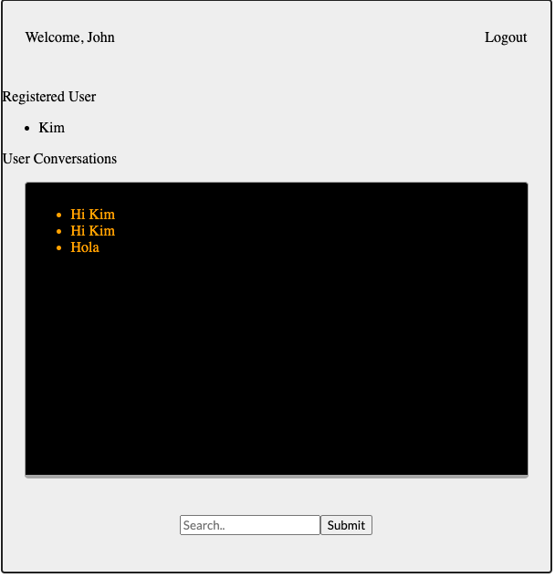

Realtime Web-based Chat App
About
Simple web-based chat application with jQuery, Vinalla JS, and Ruby on Rails backend. This sort of utility would be perfect for a live support system for your website.
Stack
- JavaScript
- HTML
- CSS
- Ruby
- Ruby on Rails
- PostgreSQL
- SQL
- Heroku
- GitHub Pages
GitHub Links
Github Frontend Github backendVideo Walkthrough
Watch VideoLive
Live LinkProject Details
I wanted to build a Single Page Application (SPA) where the frontend is built with HTML, CSS, and JavaScript and the backend is build with a Rails API backend. All interactions between the client and the server are handled asynchronously (AJAX) and use JSON as the communication format. Next steps for the project would be to enhance login and signup features with Oauth.
Web Stack and Explanation
This application uses Object Oriented JavaScript (classes) to encapsulate related data and behavior. The domain model served by the Rails backend includes associations with User, Conversation, and Message. The backend and frontend collaborate together to demonstrate Client-Server Communication. There are AJAX calls, covering CRUD actions. The client-side JavaScript code uses fetch to the appropriate HTTP verb o, and the Rails API is build using RESTful conventions.
Problems and Thought Process
The main problem was related to ensuring the screen was refreshing at an interval that was user friendly. This was solved by using the setInternal method and making a all for updated conversation at an appropriate interval.